import numpy as np
import matplotlib.pyplot as plt
import tensorflow as tf
import seaborn as sns
import tensorflow_probability as tfp
import pandas as pd
tfd = tfp.distributions
tfl = tfp.layers
tfb = tfp.bijectors
from tensorflow.keras.models import Sequential
from tensorflow.keras.layers import Dense
from tensorflow.keras.optimizers import RMSprop
from tensorflow.keras.callbacks import Callback
sns.reset_defaults()
sns.set_context(context="talk", font_scale=1)
%matplotlib inline
%config InlineBackend.figure_format='retina'Goals:
G1: Given probability distributions \(p\) and \(q\), find the divergence (measure of similarity) between them
Let us first look at G1. Look at the illustration below. We have a normal distribution \(p\) and two other normal distributions \(q_1\) and \(q_2\). Which of \(q_1\) and \(q_2\), would we consider closer to \(p\)? \(q_2\), right?
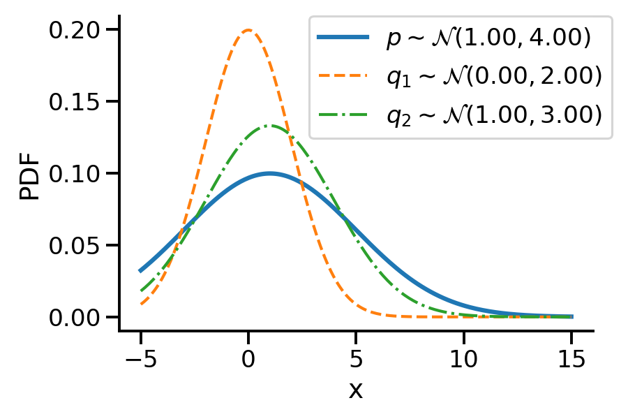
To understand the notion of similarity, we use a metric called the KL-divergence given as \(D_{KL}(a || b)\) where \(a\) and \(b\) are the two distributions.
For G1, we can say \(q_2\) is closer to \(p\) compared to \(q_1\) as:
\(D_{KL}(q_2 || p) \lt D_{KL}(q_1 || p)\)
For the above example, we have the values as \(D_{KL}(q_2|| p) = 0.07\) and \(D_{KL}(q_1|| p)= 0.35\)
G2: assuming \(p\) to be fixed, can we find optimum parameters of \(q\) to make it as close as possible to \(p\)
The following GIF shows the process of finding the optimum set of parameters for a normal distribution \(q\) so that it becomes as close as possible to \(p\). This is equivalent of minimizing \(D_{KL}(q || p)\)
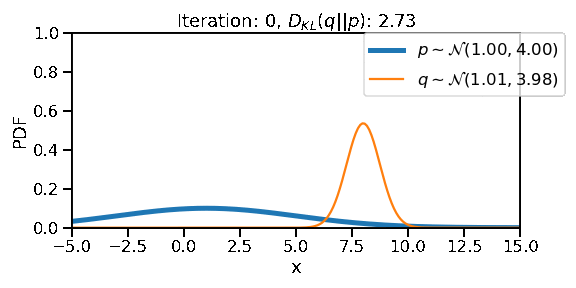
The following GIF shows the above but for a two-dimensional distribution.
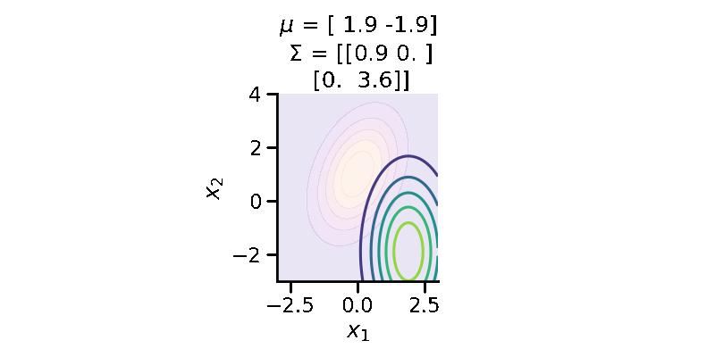
G3: finding the “distance” between two distributions of different families
The below image shows the KL-divergence between distribution 1 (mixture of Gaussians) and distribution 2 (Gaussian)
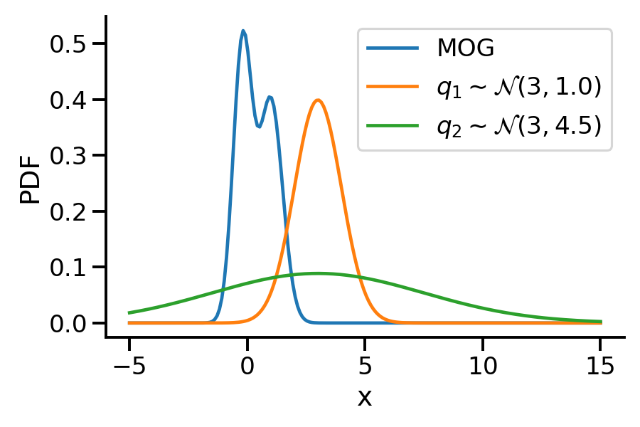
G4: optimizing the “distance” between two distributions of different families
The below GIF shows the optimization of the KL-divergence between distribution 1 (mixture of Gaussians) and distribution 2 (Gaussian)
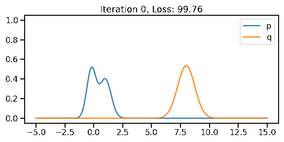
G5: Approximating the KL-divergence
G6: Implementing variational inference for linear regression
Basic Imports
Creating distributions
Creating \(p\sim\mathcal{N}(1.00, 4.00)\)
p = tfd.Normal(1, 4)2022-02-04 14:55:14.596076: I tensorflow/core/platform/cpu_feature_guard.cc:151] This TensorFlow binary is optimized with oneAPI Deep Neural Network Library (oneDNN) to use the following CPU instructions in performance-critical operations: AVX2 FMA
To enable them in other operations, rebuild TensorFlow with the appropriate compiler flags.z_values = tf.linspace(-5, 15, 200)
z_values = tf.cast(z_values, tf.float32)
prob_values_p = p.prob(z_values)
plt.plot(z_values, prob_values_p, label=r"$p\sim\mathcal{N}(1.00, 4.00)$")
sns.despine()
plt.legend()
plt.xlabel("x")
plt.ylabel("PDF")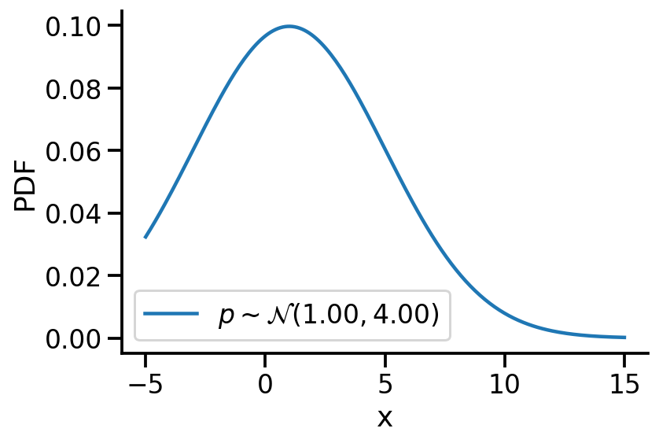
Creating \(q\sim\mathcal{N}(loc, scale)\)
def create_q(loc, scale):
return tfd.Normal(loc, scale)Generating a few qs for different location and scale value
q = {}
q[(0, 1)] = create_q(0.0, 1.0)
for loc in [0, 1]:
for scale in [1, 2]:
q[(loc, scale)] = create_q(float(loc), float(scale))plt.plot(z_values, prob_values_p, label=r"$p\sim\mathcal{N}(1.00, 4.00)$", lw=3)
plt.plot(
z_values,
create_q(0.0, 2.0).prob(z_values),
label=r"$q_1\sim\mathcal{N}(0.00, 2.00)$",
lw=2,
linestyle="--",
)
plt.plot(
z_values,
create_q(1.0, 3.0).prob(z_values),
label=r"$q_2\sim\mathcal{N}(1.00, 3.00)$",
lw=2,
linestyle="-.",
)
plt.legend(bbox_to_anchor=(1.04, 1), borderaxespad=0)
plt.xlabel("x")
plt.ylabel("PDF")
sns.despine()
plt.tight_layout()
plt.savefig(
"dkl.png",
dpi=150,
)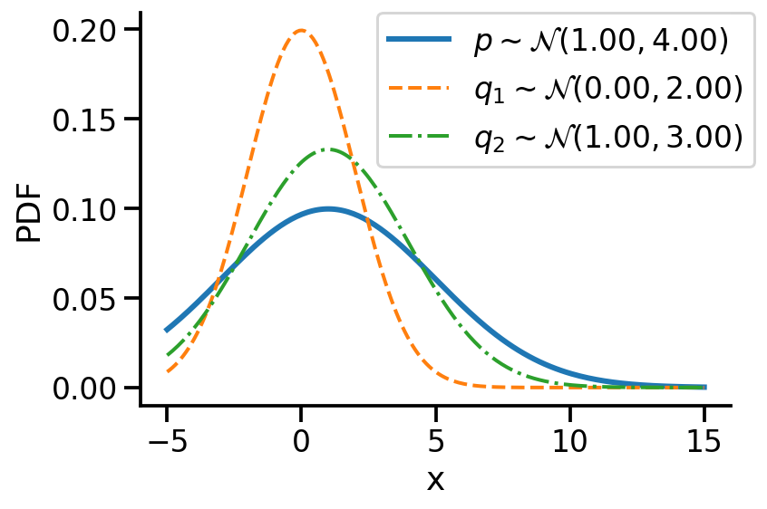
#### Computing KL-divergence
q_0_2_dkl = tfd.kl_divergence(create_q(0.0, 2.0), p)
q_1_3_dkl = tfd.kl_divergence(create_q(1.0, 3.0), p)
print(f"D_KL (q(0, 2)||p) = {q_0_2_dkl:0.2f}")
print(f"D_KL (q(1, 3)||p) = {q_1_3_dkl:0.2f}")D_KL (q(0, 2)||p) = 0.35
D_KL (q(1, 3)||p) = 0.07As mentioned earlier, clearly, \(q_2\sim\mathcal{N}(1.00, 3.00)\) seems closer to \(p\)
Optimizing the KL-divergence between q and p
We could create a grid of (loc, scale) pairs and find the best, as shown below.
plt.plot(z_values, prob_values_p, label=r"$p\sim\mathcal{N}(1.00, 4.00)$", lw=5)
for loc in [0, 1]:
for scale in [1, 2]:
q_d = q[(loc, scale)]
kl_d = tfd.kl_divergence(q[(loc, scale)], p)
plt.plot(
z_values,
q_d.prob(z_values),
label=rf"$q\sim\mathcal{{N}}({loc}, {scale})$"
+ "\n"
+ rf"$D_{{KL}}(q||p)$ = {kl_d:0.2f}",
)
plt.legend(bbox_to_anchor=(1.04, 1), borderaxespad=0)
plt.xlabel("x")
plt.ylabel("PDF")
sns.despine()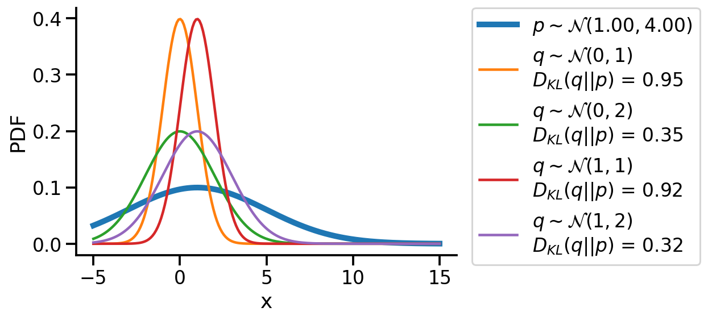
Or, we could use continuous optimization to find the best loc and scale parameters for q.
to_train_q = tfd.Normal(
loc=tf.Variable(-1.0, name="loc"),
scale=tfp.util.TransformedVariable(1.0, bijector=tfb.Exp(), name="scale"),
)to_train_q.trainable_variables2022-02-04 14:55:19.564807: W tensorflow/python/util/util.cc:368] Sets are not currently considered sequences, but this may change in the future, so consider avoiding using them.(<tf.Variable 'loc:0' shape=() dtype=float32, numpy=-1.0>,
<tf.Variable 'scale:0' shape=() dtype=float32, numpy=0.0>)@tf.function
def loss_and_grads(q_dist):
with tf.GradientTape() as tape:
loss = tfd.kl_divergence(q_dist, p)
return loss, tape.gradient(loss, q_dist.trainable_variables)optimizer = tf.keras.optimizers.Adam(learning_rate=0.01)
for i in range(500):
loss, grads = loss_and_grads(to_train_q)
optimizer.apply_gradients(zip(grads, to_train_q.trainable_variables))to_train_q.loc, to_train_q.scale(<tf.Variable 'loc:0' shape=() dtype=float32, numpy=0.98873746>,
<TransformedVariable: name=scale, dtype=float32, shape=[], fn="exp", numpy=3.9999995>)After training, we are able to recover the scale and loc very close to that of \(p\)
Animation!
from matplotlib import animation
fig = plt.figure(tight_layout=True, figsize=(8, 4))
ax = fig.gca()
to_train_q = tfd.Normal(
loc=tf.Variable(5.0, name="loc"),
scale=tfp.util.TransformedVariable(0.1, bijector=tfb.Exp(), name="scale"),
)
def animate(i):
ax.clear()
ax.plot(z_values, prob_values_p, label=r"$p\sim\mathcal{N}(1.00, 4.00)$", lw=5)
loss, grads = loss_and_grads(to_train_q)
optimizer.apply_gradients(zip(grads, to_train_q.trainable_variables))
loc = to_train_q.loc.numpy()
scale = to_train_q.scale.numpy()
ax.plot(
z_values,
to_train_q.prob(z_values),
label=rf"$q\sim \mathcal{{N}}({loc:0.2f}, {scale:0.2f})$",
)
d_kl = tfd.kl_divergence(to_train_q, p)
ax.set_title(rf"Iteration: {i}, $D_{{KL}}(q||p)$: {d_kl:0.2f}")
ax.legend(bbox_to_anchor=(1.1, 1), borderaxespad=0)
ax.set_ylim((0, 1))
ax.set_xlim((-5, 15))
ax.set_xlabel("x")
ax.set_ylabel("PDF")
sns.despine()
ani = animation.FuncAnimation(fig, animate, frames=150)
plt.close()ani.save("kl_qp.gif", writer="imagemagick", fps=15, dpi=100)<Figure size 432x288 with 0 Axes>Finding the KL divergence for two distributions from different families
Let us rework our example with p coming from a mixture of Gaussian distribution and q being Normal.
p_s = tfd.MixtureSameFamily(
mixture_distribution=tfd.Categorical(probs=[0.5, 0.5]),
components_distribution=tfd.Normal(
loc=[-0.2, 1], scale=[0.1, 0.5] # One for each component.
),
) # And same here.
p_s<tfp.distributions.MixtureSameFamily 'MixtureSameFamily' batch_shape=[] event_shape=[] dtype=float32>plt.plot(z_values, p_s.prob(z_values))
sns.despine()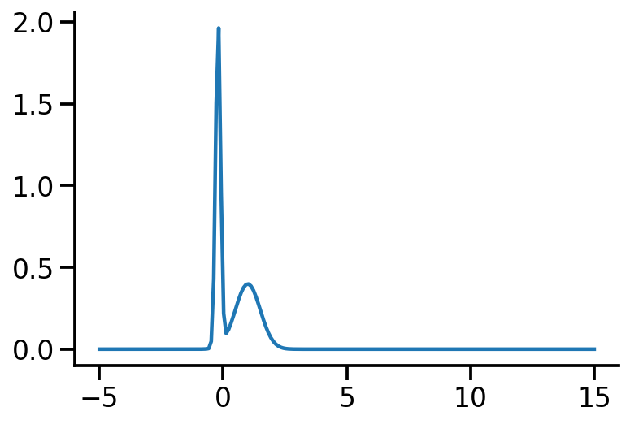
Let us create two Normal distributions q_1 and q_2 and plot them to see which looks closer to p_s.
q_1 = create_q(3, 1)
q_2 = create_q(3, 4.5)prob_values_p_s = p_s.prob(z_values)
prob_values_q_1 = q_1.prob(z_values)
prob_values_q_2 = q_2.prob(z_values)
plt.plot(z_values, prob_values_p_s, label=r"MOG")
plt.plot(z_values, prob_values_q_1, label=r"$q_1\sim\mathcal{N} (3, 1.0)$")
plt.plot(z_values, prob_values_q_2, label=r"$q_2\sim\mathcal{N} (3, 4.5)$")
sns.despine()
plt.legend()
plt.xlabel("x")
plt.ylabel("PDF")
plt.tight_layout()
plt.savefig(
"dkl-different.png",
dpi=150,
)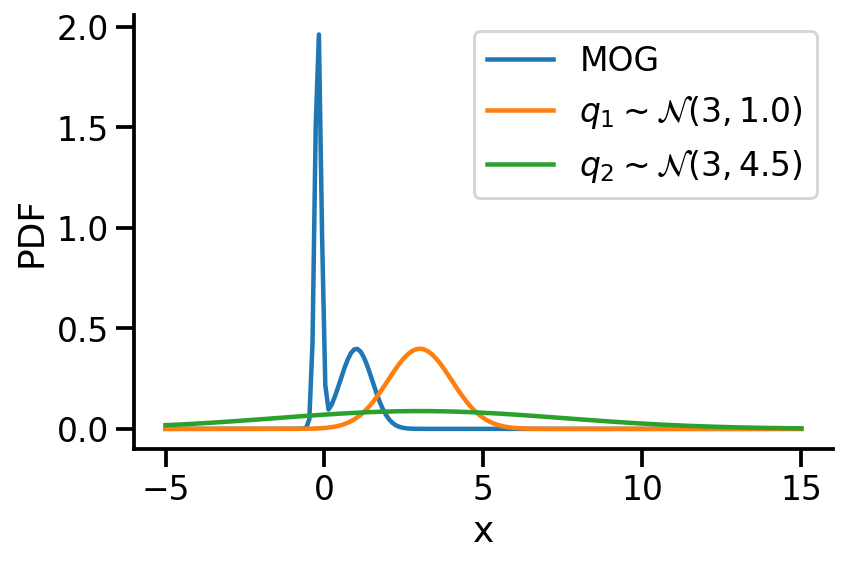
try:
tfd.kl_divergence(q_1, p_s)
except Exception as e:
print(e)No KL(distribution_a || distribution_b) registered for distribution_a type Normal and distribution_b type MixtureSameFamilyAs we see above, we can not compute the KL divergence directly. The core idea would now be to leverage the Monte Carlo sampling and generating the expectation. The following function does that.
def kl_via_sampling(q, p, n_samples=100000):
# Get samples from q
sample_set = q.sample(n_samples)
# Use the definition of KL-divergence
return tf.reduce_mean(q.log_prob(sample_set) - p.log_prob(sample_set))kl_via_sampling(q_1, p_s), kl_via_sampling(q_2, p_s)(<tf.Tensor: shape=(), dtype=float32, numpy=9.465648>,
<tf.Tensor: shape=(), dtype=float32, numpy=46.48004>)As we can see from KL divergence calculations, q_1 is closer to our Gaussian mixture distribution.
Optimizing the KL divergence for two distributions from different families
We saw that we can calculate the KL divergence between two different distribution families via sampling. But, as we did earlier, will we be able to optimize the parameters of our target surrogate distribution? The answer is No! As we have introduced sampling. However, there is still a way – by reparameterization!
Our surrogate q in this case is parameterized by loc and scale. The key idea here is to generate samples from a standard normal distribution (loc=0, scale=1) and then apply an affine transformation on the generated samples to get the samples generated from q. See my other post on sampling from normal distribution to understand this better.
The loss can now be thought of as a function of loc and scale.
n_samples = 1000
def loss(loc, scale):
q = tfd.Normal(loc=loc, scale=scale)
q_1 = tfd.Normal(loc=0.0, scale=1.0)
sample_set = q_1.sample(n_samples)
sample_set = loc + scale * sample_set
return tf.reduce_mean(q.log_prob(sample_set) - p_s.log_prob(sample_set))Having defined the loss above, we can now optimize loc and scale to minimize the KL-divergence.
optimizer = tf.optimizers.Adam(learning_rate=0.05)n_iter = 150
location_array = np.empty(n_iter, dtype=np.float32)
scale_array = np.empty(n_iter, dtype=np.float32)
loss_array = np.empty(n_iter, dtype=np.float32)
loc = tf.Variable(3.0, dtype=tf.float32)
scale = tf.Variable(4.0, dtype=tf.float32)
for i in range(n_iter):
with tf.GradientTape(persistent=True) as tape:
tape.watch(loc)
tape.watch(scale)
lo = loss(loc, scale)
[dl_loc, dl_scale] = tape.gradient(lo, [loc, scale])
if i % 50 == 0:
tf.print(lo, loc, scale)
location_array[i] = loc.numpy()
scale_array[i] = scale.numpy()
loss_array[i] = lo.numpy()
optimizer.apply_gradients(zip([dl_loc, dl_scale], [loc, scale]))38.7589951 3 4
0.4969607 0.736858189 0.680736303
0.528585315 0.774057031 0.617758751q_s = tfd.Normal(loc=loc, scale=scale)
q_s<tfp.distributions.Normal 'Normal' batch_shape=[] event_shape=[] dtype=float32>prob_values_p_s = p_s.prob(z_values)
prob_values_q_s = q_s.prob(z_values)
plt.plot(z_values, prob_values_p_s, label=r"p")
plt.plot(z_values, prob_values_q_s, label=r"q")
sns.despine()
plt.legend()
plt.xlabel("x")
plt.ylabel("PDF")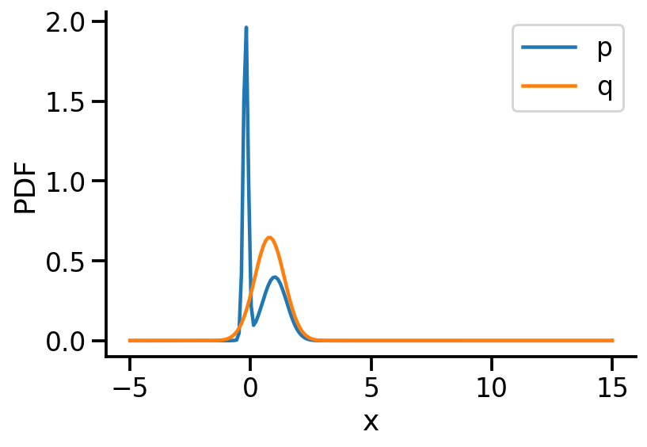
prob_values_p_s = p_s.prob(z_values)
fig = plt.figure(tight_layout=True, figsize=(8, 4))
ax = fig.gca()
def a(iteration):
ax.clear()
loc = location_array[iteration]
scale = scale_array[iteration]
q_s = tfd.Normal(loc=loc, scale=scale)
prob_values_q_s = q_s.prob(z_values)
ax.plot(z_values, prob_values_p_s, label=r"p")
ax.plot(z_values, prob_values_q_s, label=r"q")
ax.set_title(f"Iteration {iteration}, Loss: {loss_array[iteration]:0.2f}")
ani_mg = animation.FuncAnimation(fig, a, frames=n_iter)
plt.close()plt.plot(location_array, label="loc")
plt.plot(scale_array, label="scale")
plt.xlabel("Iterations")
sns.despine()
plt.legend()<matplotlib.legend.Legend at 0x1add94bb0>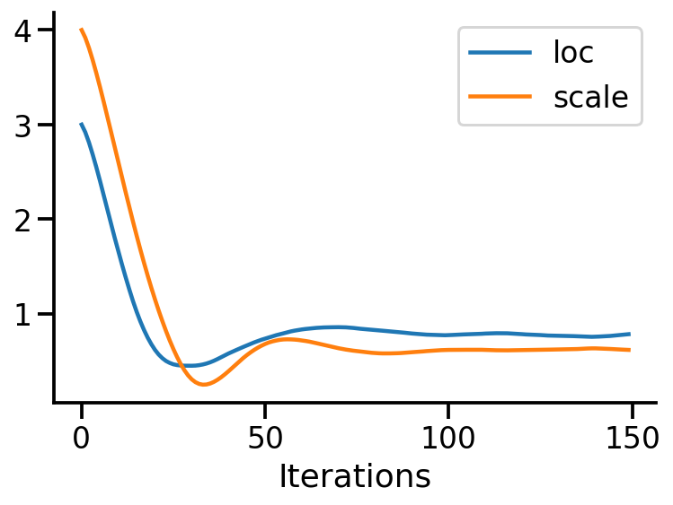
ani_mg.save("kl_qp_mg.gif", writer="imagemagick")Optimizing the KL-divergence between two 2d distributions
Let us now repeat the same procedure but for two 2d Normal distributions.
p_2d = tfd.MultivariateNormalFullCovariance(
loc=[0.0, 0.0], covariance_matrix=[[1.0, 0.5], [0.5, 2]]
)
to_train_q_2d_2 = tfd.MultivariateNormalDiag(
loc=tf.Variable([2.0, -2.0], name="loc"),
scale_diag=tfp.util.TransformedVariable(
[1.0, 2.0], bijector=tfb.Exp(), name="scale"
),
)WARNING:tensorflow:From /Users/nipun/miniforge3/lib/python3.9/site-packages/tensorflow_probability/python/distributions/distribution.py:342: MultivariateNormalFullCovariance.__init__ (from tensorflow_probability.python.distributions.mvn_full_covariance) is deprecated and will be removed after 2019-12-01.
Instructions for updating:
`MultivariateNormalFullCovariance` is deprecated, use `MultivariateNormalTriL(loc=loc, scale_tril=tf.linalg.cholesky(covariance_matrix))` instead.from mpl_toolkits.mplot3d import Axes3D
from matplotlib import cm
def make_pdf_2d_gaussian(mu, sigma, ax, title):
N = 60
X = np.linspace(-3, 3, N)
Y = np.linspace(-3, 4, N)
X, Y = np.meshgrid(X, Y)
# Pack X and Y into a single 3-dimensional array
pos = np.empty(X.shape + (2,))
pos[:, :, 0] = X
pos[:, :, 1] = Y
F = tfd.MultivariateNormalFullCovariance(loc=mu, covariance_matrix=sigma)
Z = F.prob(pos)
sns.despine()
ax.set_xlabel(r"$x_1$")
ax.set_ylabel(r"$x_2$")
ax.set_aspect("equal")
if title:
ax.set_title(f"$\mu$ = {mu}\n $\Sigma$ = {np.array(sigma)}")
ax.contour(X, Y, Z, cmap="viridis", alpha=1, zorder=2)
else:
ax.contourf(X, Y, Z, cmap="plasma", alpha=0.1)fig, ax = plt.subplots()
make_pdf_2d_gaussian([0.0, 1.0], [[1.0, 0.5], [0.5, 2]], ax, False)
make_pdf_2d_gaussian(
to_train_q_2d_2.loc.numpy(), to_train_q_2d_2.covariance().numpy(), ax, True
)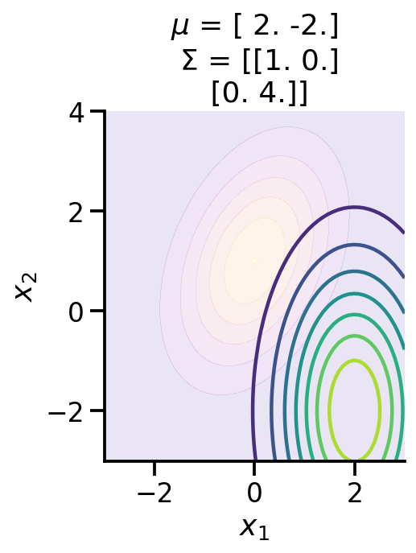
As we can see above, the two distributions look very different. We can calculate the KL-divergence as before.
tfd.kl_divergence(to_train_q_2d_2, p_2d)<tf.Tensor: shape=(), dtype=float32, numpy=4.8723755>fig = plt.figure(tight_layout=True, figsize=(8, 4))
ax = fig.gca()
def animate(i):
ax.clear()
with tf.GradientTape() as tape:
loss = tfd.kl_divergence(to_train_q_2d_2, p_2d)
grads = tape.gradient(loss, to_train_q_2d_2.trainable_variables)
optimizer.apply_gradients(zip(grads, to_train_q_2d_2.trainable_variables))
loc = np.round(to_train_q_2d_2.loc.numpy(), 1)
scale = np.round(to_train_q_2d_2.covariance().numpy(), 1)
make_pdf_2d_gaussian(loc, scale, ax, True)
make_pdf_2d_gaussian([0.0, 1.0], [[1.0, 0.5], [0.5, 2]], ax, False)
ax.set_xlabel(r"$x_1$")
ax.set_ylabel(r"$x_2$")
ax.spines["right"].set_visible(False)
ax.spines["top"].set_visible(False)
# Only show ticks on the left and bottom spines
ax.yaxis.set_ticks_position("left")
ax.xaxis.set_ticks_position("bottom")
ani2 = animation.FuncAnimation(fig, animate, frames=100)
plt.close()ani2.save("kl_qp_2.gif", writer="imagemagick", fps=15, dpi=100)<Figure size 432x288 with 0 Axes>to_train_q_2d_2.loc, to_train_q_2d_2.covariance()(<tf.Variable 'loc:0' shape=(2,) dtype=float32, numpy=array([ 0.01590762, -0.01590773], dtype=float32)>,
<tf.Tensor: shape=(2, 2), dtype=float32, numpy=
array([[0.87550056, 0. ],
[0. , 1.7570419 ]], dtype=float32)>)tfd.kl_divergence(to_train_q_2d_2, p_2d)<tf.Tensor: shape=(), dtype=float32, numpy=0.0670591>We can now see that the KL-divergence has reduced significantly from where we started, but it will unlikely improve as ou r q distribution is a multivariate diagonal normal distribution, meaning there is no correlation between the two dimensions.
To-FIX
Everything below here needs to be fixed
KL-Divergence and ELBO
Let us consider linear regression. We have parameters \(\theta \in R^D\) and we define a prior over them. Let us assume we define prior \(p(\theta)\sim \mathcal{N_D} (\mu, \Sigma)\). Now, given our dataset \(D = \{X, y\}\) and a parameter vector \(\theta\), we can deifine our likelihood as \(p(D|\theta)\) or $p(y|X, ) = {i=1}^{n} p(y_i|x_i, ) = {i=1}^{n} (y_i|x_i^T, ^2) $
As per Bayes rule, we can obtain the posterior over \(\theta\) as:
\(p(\theta|D) = \dfrac{p(D|\theta)p(\theta)}{p(D)}\)
Now, in general \(p(D)\) is hard to compute.
So, in variational inference, our aim is to use a surrogate distribution \(q(\theta)\) such that it is very close to \(p(\theta|D)\). We do so by minimizing the KL divergence between \(q(\theta)\) and \(p(\theta|D)\).
Aim: \[q^*(\theta) = \underset{q(\theta) \in \mathcal{Q}}{\mathrm{argmin~}} D_{KL}[q(\theta)||p(\theta|D)]\]
Now, \[D_{KL}[q(\theta)||p(\theta|D)] = \mathbb{E}_{q(\theta)}[\log\frac{q(\theta)}{p(\theta|D)}]\] Now, \[ = \mathbb{E}_{q(\theta)}[\log\frac{q(\theta)p(D)}{p(\theta, D)}]\] Now, \[ = \mathbb{E}_{q(\theta)}[\log q(\theta)]- \mathbb{E}_{q(\theta)}[\log p(\theta, D)] + \mathbb{E}_{q(\theta)}[\log p(D)] \] \[= \mathbb{E}_{q(\theta)}[\log q(\theta)]- \mathbb{E}_{q(\theta)}[\log p(\theta, D)] + \log p(D) \]
Now, \(p(D) \in \{0, 1\}\). Thus, \(\log p(D) \in \{-\infty, 0 \}\)
Now, let us look at the quantities:
\[\underbrace{D_{KL}[q(\theta)||p(\theta|D)]}_{\geq 0} = \underbrace{\mathbb{E}_{q(\theta)}[\log q(\theta)]- \mathbb{E}_{q(\theta)}[\log p(\theta, D)]}_{-\text{ELBO(q)}} + \underbrace{\log p(D)}_{\leq 0}\]
Thus, we know that \(\log p(D) \geq \text{ELBO(q)}\)
Thus, finally we can rewrite the optimisation from
\[q^*(\theta) = \underset{q(\theta) \in \mathcal{Q}}{\mathrm{argmin~}} D_{KL}[q(\theta)||p(\theta|D)]\]
to
\[q^*(\theta) = \underset{q(\theta) \in \mathcal{Q}}{\mathrm{argmax~}} \text{ELBO(q)}\]
Now, given our linear regression problem setup, we want to maximize the ELBO.
We can do so by the following. As a simple example, let us assume \(\theta \in R^2\)
- Assume some q. Say, a Normal distribution. So, \(q\sim \mathcal{N}_2\)
- Draw samples from q. Say N samples.
- Initilize ELBO = 0.0
- For each sample:
- Let us assume drawn sample is \([\theta_1, \theta_2]^T\)
- Compute log_prob of prior on \([\theta_1, \theta_2]^T\) or
lp = p.log_prob(θ1, θ2) - Compute log_prob of likelihood on \([\theta_1, \theta_2]^T\) or
ll = l.log_prob(θ1, θ2) - Compute log_prob of q on \([\theta_1, \theta_2]^T\) or
lq = q.log_prob(θ1, θ2) - ELBO = ELBO + (ll+lp-q)
- Return ELBO/N
def lr(x, stddv_datapoints):
num_datapoints, data_dim = x.shape
th = yield tfd.Normal(
loc=tf.zeros([data_dim + 1]), scale=tf.ones([data_dim + 1]), name="theta"
)
x_dash = tf.concat([tf.ones_like(x), x], 1)
y = yield tfd.Normal(
loc=tf.linalg.matvec(x_dash, th), scale=stddv_datapoints, name="y"
)x = tf.linspace(-5.0, 5.0, 100)
x = tf.expand_dims(x, 1)import functools
stddv_datapoints = 1
concrete_lr_model = functools.partial(lr_2, x=x, stddv_datapoints=stddv_datapoints)
model = tfd.JointDistributionCoroutineAutoBatched(concrete_lr_model)tf.random.set_seed(0)
th_sample, data_sample = model.sample()
plt.scatter(x[:, 0], data_sample, s=10)
plt.plot(x[:, 0], tf.reshape(x*th_sample[1] + th_sample[0], [-1]))
print(th_sample)tf.Tensor([1.5110626 0.42292204], shape=(2,), dtype=float32)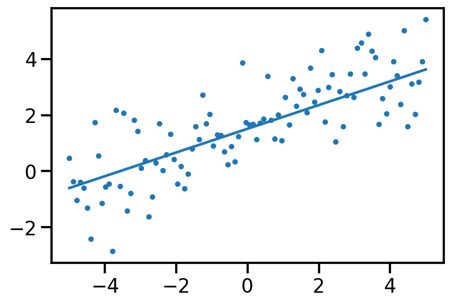
model.log_prob(th_sample, data_sample)<tf.Tensor: shape=(), dtype=float32, numpy=-150.26591>loc = tf.Variable([1.0, 1.0], dtype=tf.float32)
scale = tf.Variable([1.0, 1.0])
q_to_learn = tfd.Normal(loc=loc, scale=scale, name="q_theta_learn")n_samples = 1000
loc = tf.Variable([1.0, 0.4], dtype=tf.float32)
scale = tfp.util.TransformedVariable([.7, .6], bijector=tfb.SoftClip(0.5, 1.0))
def loss():
q_to_learn = tfd.Normal(loc=loc, scale=scale, name="q_theta_learn")
q_1 = tfd.Normal(loc=[0.0,0.0], scale=[1.0, 1.0])
sample_set = q_1.sample(n_samples)
log_joint = tf.reduce_sum(model.log_prob(sample_set, data_sample))
log_q = tf.reduce_sum(q_to_learn.log_prob(sample_set))
return log_q - log_jointtrace6000 = tfp.math.minimize(loss_fn=loss, num_steps=6000,
optimizer=tf.optimizers.Adam(0.0001))loc<tf.Variable 'Variable:0' shape=(2,) dtype=float32, numpy=array([1.4298061 , 0.84917635], dtype=float32)>scale<TransformedVariable: name=soft_clip, dtype=float32, shape=[2], fn="soft_clip", numpy=array([0.6512191, 0.5705266], dtype=float32)>plt.plot(trace)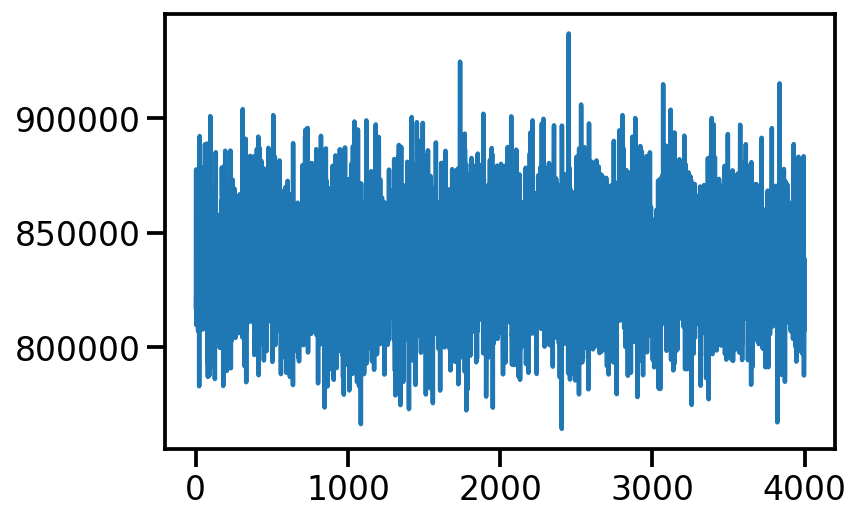
loc, th_sample, scale
#scale = tfp.util.TransformedVariable([1., 1.], bijector=tfb.Exp())(<tf.Variable 'Variable:0' shape=(2,) dtype=float32, numpy=array([2.0690155, 1.496477 ], dtype=float32)>,
<tf.Tensor: shape=(2,), dtype=float32, numpy=array([1.5110626 , 0.42292204], dtype=float32)>,
<TransformedVariable: name=soft_clip, dtype=float32, shape=[2], fn="soft_clip", numpy=array([0.5936036, 0.5403929], dtype=float32)>)plt.scatter(x[:, 0], data_sample, s=10)
plt.plot(x[:, 0], tf.reshape(x*loc[1] + loc[0], [-1]))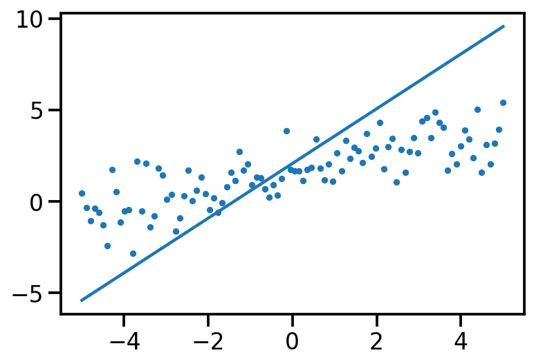
loss_mc<function __main__.loss_mc(loc, scale)>loc = tf.Variable([1.0, 0.4], dtype=tf.float32)
scale = tfp.util.TransformedVariable([.7, .6], bijector=tfb.SoftClip(0.5, 1.0))
def loss_mc(loc, scale):
q_to_learn = tfd.Normal(loc=loc, scale=scale, name="q_theta_learn")
q_1 = tfd.Normal(loc=[0.0,0.0], scale=[1.0, 1.0])
sample_set = q_1.sample(n_samples)
log_joint = tf.reduce_sum(model.log_prob(sample_set, data_sample))
log_q = tf.reduce_sum(q_to_learn.log_prob(sample_set))
return log_q - log_joint
target_log_prob_fn = lambda th: model.log_prob((th, data_sample))
data_dim=2
qt_mean = tf.Variable(tf.random.normal([data_dim]))
qt_stddv = tfp.util.TransformedVariable(
1e-4 * tf.ones([data_dim]), bijector=tfb.Softplus()
)
def factored_normal_variational_model():
qt = yield tfd.Normal(loc=qt_mean, scale=qt_stddv, name="qt")
surrogate_posterior = tfd.JointDistributionCoroutineAutoBatched(
factored_normal_variational_model
)
losses = tfp.vi.fit_surrogate_posterior(
target_log_prob_fn=target_log_prob_fn,
surrogate_posterior=surrogate_posterior,
optimizer=tf.optimizers.Adam(learning_rate=0.05),
num_steps=100,
)/Users/nipun/miniforge3/lib/python3.9/site-packages/tensorflow_probability/python/internal/vectorization_util.py:87: UserWarning: Saw Tensor seed Tensor("seed:0", shape=(2,), dtype=int32), implying stateless sampling. Autovectorized functions that use stateless sampling may be quite slow because the current implementation falls back to an explicit loop. This will be fixed in the future. For now, you will likely see better performance from stateful sampling, which you can invoke by passing a Python `int` seed.
warnings.warn(
/Users/nipun/miniforge3/lib/python3.9/site-packages/tensorflow_probability/python/internal/vectorization_util.py:87: UserWarning: Saw Tensor seed Tensor("seed:0", shape=(2,), dtype=int32), implying stateless sampling. Autovectorized functions that use stateless sampling may be quite slow because the current implementation falls back to an explicit loop. This will be fixed in the future. For now, you will likely see better performance from stateful sampling, which you can invoke by passing a Python `int` seed.
warnings.warn(plt.plot(losses)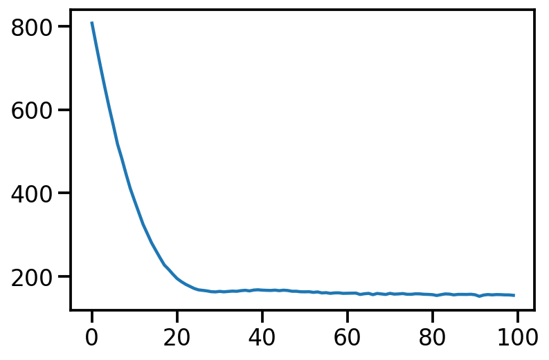
StructTuple(
qt=<tf.Tensor: shape=(2,), dtype=float32, numpy=array([1.5720905, 0.4626296], dtype=float32)>
)qt_mean, qt_stddv(<tf.Variable 'Variable:0' shape=(2,) dtype=float32, numpy=array([1.5777218 , 0.46246716], dtype=float32)>,
<TransformedVariable: name=softplus, dtype=float32, shape=[2], fn="softplus", numpy=array([0.01456336, 0.01367522], dtype=float32)>)plt.scatter(x[:, 0], data_sample, s=10)
plt.plot(x[:, 0], tf.reshape(x*qt_mean[1] + qt_mean[0], [-1]))
post_samples = surrogate_posterior.sample(200)
post_samples.qt[0:5]WARNING:tensorflow:Note that RandomStandardNormal inside pfor op may not give same output as inside a sequential loop.<tf.Tensor: shape=(5, 2), dtype=float32, numpy=
array([[1.5795265 , 0.500741 ],
[1.5515635 , 0.46671686],
[1.5585055 , 0.4617632 ],
[1.5856469 , 0.44141397],
[1.5763292 , 0.45420292]], dtype=float32)>plt.scatter(x[:, 0], data_sample, s=10)
plt.plot(x[:, 0], tf.reshape(x*qt_mean[1] + qt_mean[0], [-1]))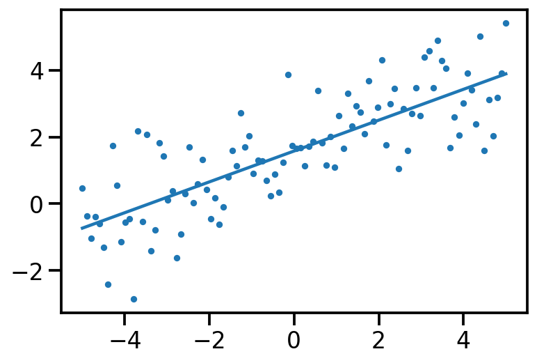
References
- https://www.youtube.com/watch?v=HUsznqt2V5I
- https://www.youtube.com/watch?v=x9StQ8RZ0ag&list=PLISXH-iEM4JlFsAp7trKCWyxeO3M70QyJ&index=9
- https://colab.research.google.com/github/goodboychan/goodboychan.github.io/blob/main/_notebooks/2021-09-13-02-Minimizing-KL-Divergence.ipynb#scrollTo=gd_ev8ceII8q
- https://goodboychan.github.io/python/coursera/tensorflow_probability/icl/2021/09/13/02-Minimizing-KL-Divergence.html